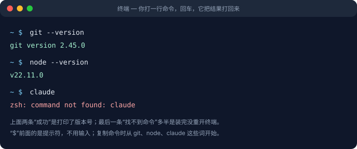
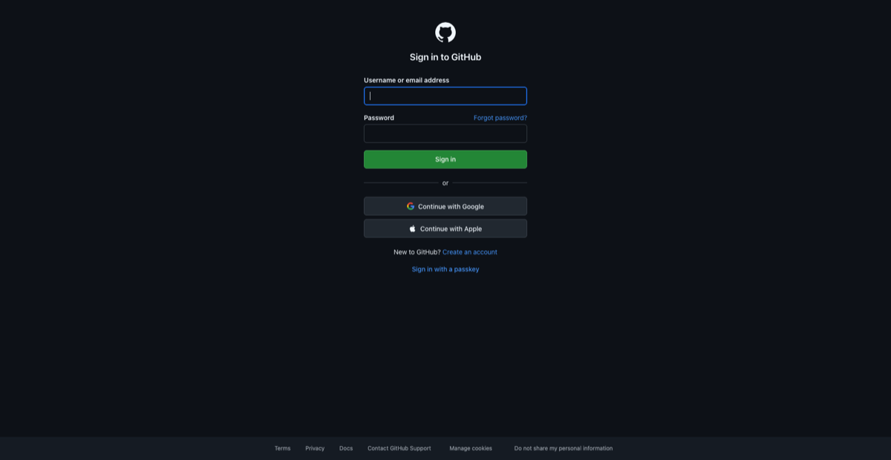
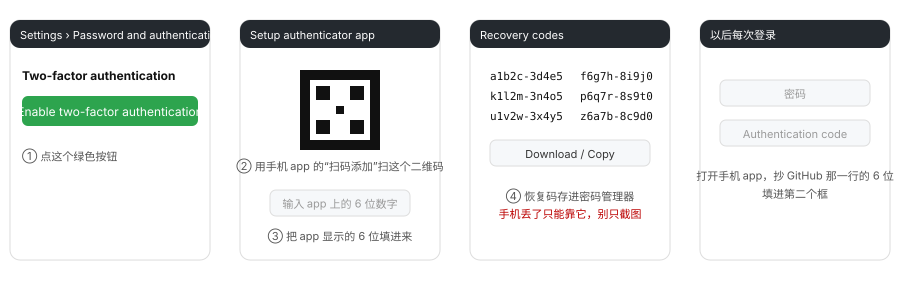
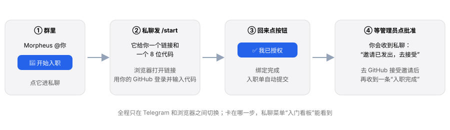
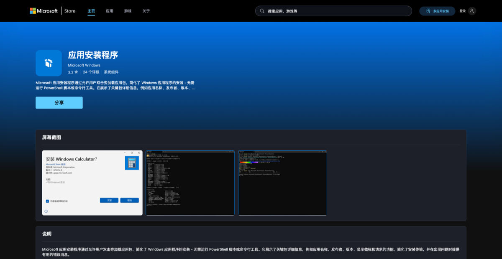
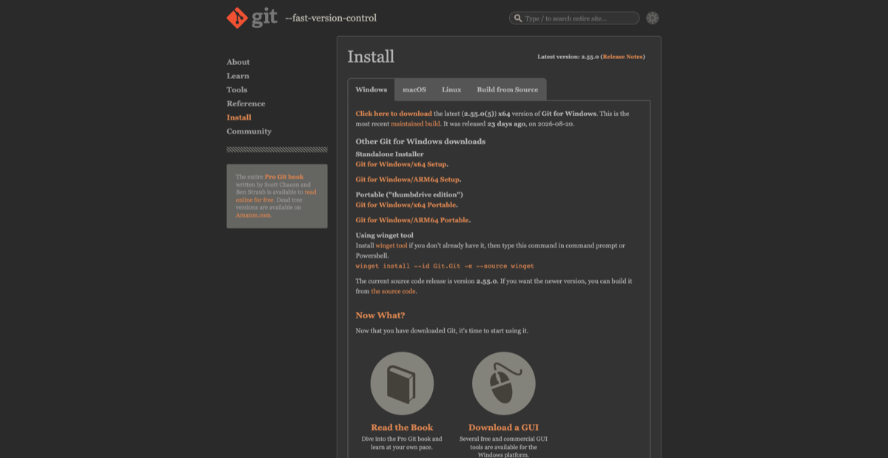
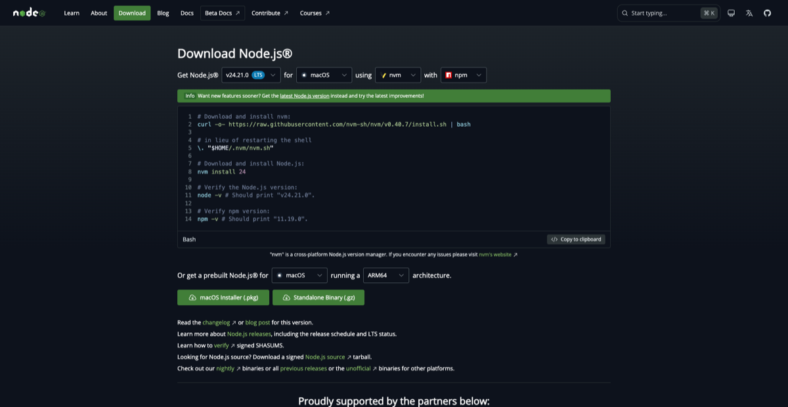
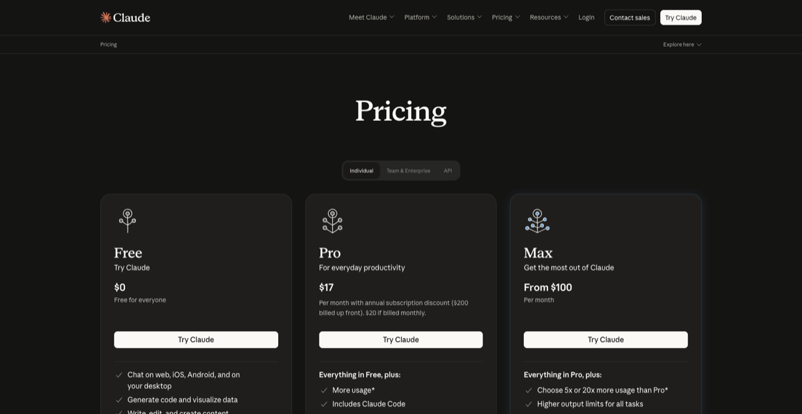

一台电脑
macOS、Windows 或 Linux。手机可以看指南，安装要在电脑上完成。
WELCOME TO THE TEAM
不用会编程，也不用用过 AI。跟着这份指南，
准备好账号和工具，让你的 AI 助手带你继续。
今天的小目标
和团队连接，让 AI 就位。约 1.5–2.5 小时 · 审批等待另计先打通联系和网络，后面每一步都会更顺利。
macOS、Windows 或 Linux。手机可以看指南，安装要在电脑上完成。
能正常收邮件。注册用哪个邮箱，先和拉你进群的同事确认。
装好 Telegram，让同事拉你进群。本页称这位同事为「引路人」。
在电脑浏览器中打开下面的网站，能正常显示页面即可。
使用 Codex 还需要打开 ChatGPT ↗。Telegram 的下载、登录方式见 安装 Telegram。
公司会提供统一的网络方案。网络确认可用后再下载安装工具。
可以。终端就是输入文字命令的窗口，后面会教你怎么打开。点击「复制」，粘贴到终端，按回车执行；每次等当前命令结束，再运行下一条。

有电脑和邮箱，工作网站都能打开，Telegram 已登录，也知道遇到问题找谁。
GitHub 用来共享代码和公司流程，也是你加入公司组织的身份。

请先完成这项账号保护，再申请加入公司。手机上准备 Google Authenticator、Microsoft Authenticator，或你已有的支持一次性密码的验证器。

卡住：验证码总提示错误，多半是手机时间不准，去手机设置里把时间改成自动获取。
现在提交入职申请。等审批时，可以继续装工具。
请引路人把你拉进 Telegram 公司群，并发给你 Morpheus 的名片或私聊入口，打开与 bot 的私聊。
求助：提问、反馈卡住的步骤。
公告：查看团队通知和流程更新。
入职和权限申请在 Morpheus 私聊中进行，进度和审批结果也在私聊查看。
私聊发送 /start。打开 bot 给的 GitHub 链接，登录刚准备好的账号，输入它提供的 8 位代码并授权；回到 Telegram 点击「我已授权」。
审批结果会通过私聊通知。在 bot 菜单的「入门看板」或发送 /status 可以查看进度。
用绑定的同一个 GitHub 账号打开邀请页面，点击 Join。管理员批准和你接受邀请是两件事，接受后才真正加入。
打开 GitHub 邀请页面 ↗先继续准备电脑环境。这一步会保留为「等待中」，安装公司流程前再回来接受邀请。

没有入群记录：请引路人联系管理员，在群里回复你的消息并发送 /sponsor，之后你再私聊 /start。
邀请页 404：确认登录的是绑定的账号，并检查 bot 是否已通知「邀请已发出」。还未审批就继续等；已收到通知仍打不开，联系引路人。
Git 记录修改，Node.js 运行工具，GitHub CLI（gh）连接你的账号。
/bin/bash -c "$(curl -fsSL https://raw.githubusercontent.com/Homebrew/install/HEAD/install.sh)"brew install git ghwinget：
winget --version
winget install --id Git.Git -ewinget install --id OpenJS.NodeJS.LTS -ewinget install --id GitHub.cli -e三个都是"下载、双击、一路下一步"，装完重开 PowerShell：


sudo apt update && sudo apt install -y git curlgit --versionnode --versiongh --version常见问题：提示 command not found 或"无法识别"，先检查安装是否成功，再重开终端；Windows 还不行就重启电脑。
浏览器登录和终端登录是两回事。这一步让电脑能下载公司流程。
gh auth login -h github.com -p https -w这条命令已选好 GitHub.com、HTTPS 和浏览器登录，部分选择题会自动跳过。若询问是否用 GitHub 凭据登录 Git，选 Yes。
gh auth setup-gitgh auth status显示已登录 github.com，当前账号与你绑定给 Morpheus 的一致。
浏览器没打开：手动前往 GitHub 设备授权页 ↗，输入终端本次显示的代码。过期就重新执行登录命令。
登录错账号：重新运行上面的登录命令，在浏览器确认使用正确账号，再运行 gh auth status 检查。
Claude Code 使用你的 Claude 账号。账号由你自己持有，订阅费用按公司流程报销。
已有可用订阅就直接检查状态。保留账单，具体报销额度和流程以后续公司 SOP 为准。

卡住：无法付款或登录时，把页面的错误提示发给引路人，确认可用方案。不要附上银行卡信息、密码或验证码。
把 Claude Code 装进终端，再登录你的订阅账号。
curl -fsSL https://claude.ai/install.sh | bashcurl -fsSL https://claude.ai/install.sh | bashirm https://claude.ai/install.ps1 | iex按安装结束的提示处理 PATH，然后关掉终端重新打开，执行：
claude第一次运行它会问你几个问题：
claude --version 能打印版本号。卡住：先重开终端，检查安装输出中的 PATH 提示，或对照 官方安装说明 ↗。
可以在 PowerShell 使用官方提供的 WinGet 安装方式：
winget install Anthropic.ClaudeCodeCodex CLI 是另一个 AI 工作入口，使用你自己的 ChatGPT 账号登录。
打开 ChatGPT ↗ 注册或登录，确认账号有 Codex 使用权限。需要订阅或升级时，先和引路人确认方案与报销要求；已有可用账号就直接使用。
先完成 基础工具安装。已有 Node.js 的电脑可以在普通终端逐条执行：
npm install -g @openai/codex装完重开终端，检查版本：
codex --versioncodex login在浏览器按提示登录自己的 ChatGPT 账号并授权，完成后回到终端。使用个人账号的同事选择 ChatGPT 登录即可。
codex login status显示已登录，且 codex --version 能打印版本号。
先重开终端。Windows 若 npm.ps1 被脚本策略阻止，把安装命令中的 npm 改成 npm.cmd。macOS / Linux 若 npm 提示 EACCES，可以改用 官方独立安装方式 ↗；不要直接给 npm 安装命令加 sudo。
仍然失败，把安装报错和系统信息发给引路人。
桌面窗口适合管理项目和对话；CLI 适合在终端工作，两个入口都准备好。
已经装好 Codex CLI 后，运行下面的命令打开桌面应用；未安装时会启动安装流程：
codex app也可以打开 官方桌面应用下载页 ↗，按你的设备支持情况下载安装包。打开后按提示完成安装。
按 官方 Linux 桌面版说明 ↗ 检查支持的发行版和处理器，下载对应的 .deb 或 .rpm 包并安装。Linux 桌面版目前为预览版；不支持的系统请联系引路人确认替代安排。
先检查是否下载了官方当前版本、登录了正确账号。按官网支持范围核对系统；仍不可用就联系引路人，先保留可用的 Codex CLI。
安装入门插件，让 AI 知道公司的流程，以及该怎么带你完成。
还在等审批？回到 「加入公司组织」 查看邀请。
如果还在与 Claude 或 Codex 对话，先按 Ctrl + C 退出，再粘贴这条命令：
npx github:Ali-Matrix-Technologies/ali-sop出现 Ok to proceed? 时，按 y 回车。安装器会检查前置、同步流程库、分别为 Claude Code 和 Codex CLI 安装插件并验证。
账号和工具准备好了。让 AI 带你走进公司的工作方式。
安装插件后重新启动，在新会话中加载公司流程。
claude也可以在终端运行 codex，或重新打开 Codex Desktop。在桌面版的插件列表中检查公司插件是否已启用；如果没有，先使用 CLI 并联系引路人排查。
我是新人，从哪开始AI 会读取公司流程，给你推荐顺序，并询问是否带着做。回复「要」就可以开始；不懂的地方随时问「这是什么意思」。
做事情直接问 AI；入职和权限申请私聊 Morpheus，申请权限发送 /request。群里的两个入口分工很简单：「求助」提问，「公告」看通知和流程更新。
READY FOR DAY ONE
你已完成全部 11 步。接下来，让 AI 带着你了解公司流程，开始第一件事。
回看第一句话这里的进度由你确认；实际入职状态以 Morpheus 看板为准。
YOUR TOOLKIT
知道每个工具用来做什么，再按指引安装。账号由你自己持有，付费方案先和引路人确认。
「求助」提问、「公告」看通知，私聊 bot 办入职。
记录修改、运行安装器、连接 GitHub。
使用 Claude 账号，在终端和 AI 工作。
使用 ChatGPT 账号，在终端和 AI 工作。
在桌面窗口中管理项目和 AI 对话。
访问公司服务器、数据库等资源。
STAY CONNECTED
公司沟通、入职通知和求助都在 Telegram。先在手机登录，再把同一个账号连到电脑。
从 Telegram 官方应用列表 ↗ 进入 iOS 或 Android 的下载入口。打开应用，用自己的手机号按提示完成注册或登录。
打开 Telegram Desktop 官方下载页 ↗，选择 macOS、Windows 或 Linux，下载并安装。
启动桌面端，按界面提示用手机中的 Telegram 扫码登录，或选择手机号登录。确认手机和电脑使用同一个账号。
把你的 Telegram 用户名私下告诉引路人，请对方拉你进群。群里只有「求助」和「公告」两个入口：有问题到「求助」，团队通知和流程更新看「公告」。请引路人发给你 Morpheus 的名片或私聊入口，之后按 加入公司组织 绑定 GitHub。
按登录页面提示检查验证码接收方式；已登录的 Telegram 设备也可能收到登录消息。网络不可用时联系引路人确认公司网络方案，不要把登录码转发给别人。
INFRASTRUCTURE ACCESS
先了解用途。安装版本、公司连接地址和岗位权限，由管理员在上线后提供。
Teleport Connect 是桌面客户端，tsh 是终端客户端；两者用于访问公司授权给你的服务器、数据库等资源。
tsh 加入 PATH；然后重开终端检查。tsh versiontsh status安装客户端不会自动获得公司权限。入口上线后，按岗位需要私聊 Morpheus 发 /request 申请访问，审批完成后再检查。
QUICK REFERENCE
在普通终端中执行，每次一条。装完工具后重开终端，再检查版本。
git --versionnode --versiongh --versiongh auth statusclaude --versionclaudecodex --versioncodex login statustsh versiontsh statusnpx github:Ali-Matrix-Technologies/ali-sop doctorGOOD TO KNOW
WE ARE HERE TO HELP
还没进群，直接联系引路人；已经进群，到 Telegram 主群的「求助」话题发消息。
我在完成 Ali Matrix 新人指南。
当前步骤：[填写步骤名称]
电脑系统：[macOS / Windows / Linux]
我做了什么：[填写操作或命令]
实际结果：[粘贴完整报错，可附截图]
我已经试过：[填写尝试过的办法]发送前去掉密码、验证码、恢复码、令牌和银行卡信息。
返回当前步骤 →